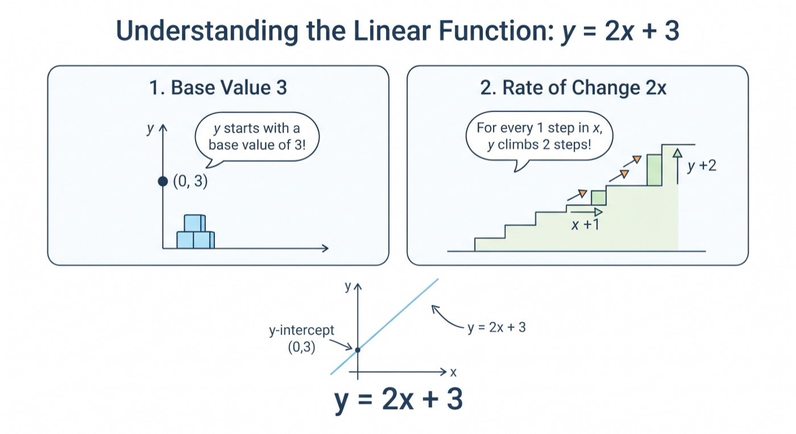
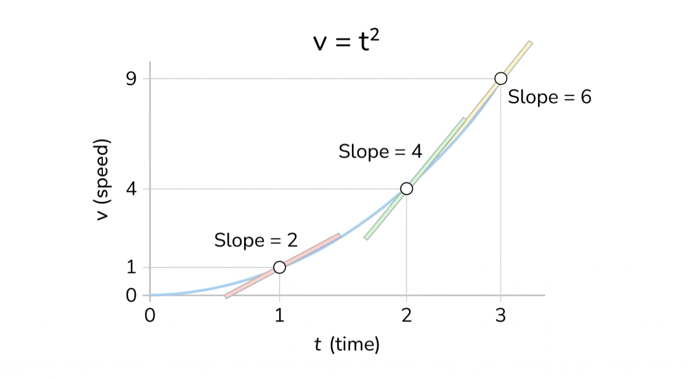
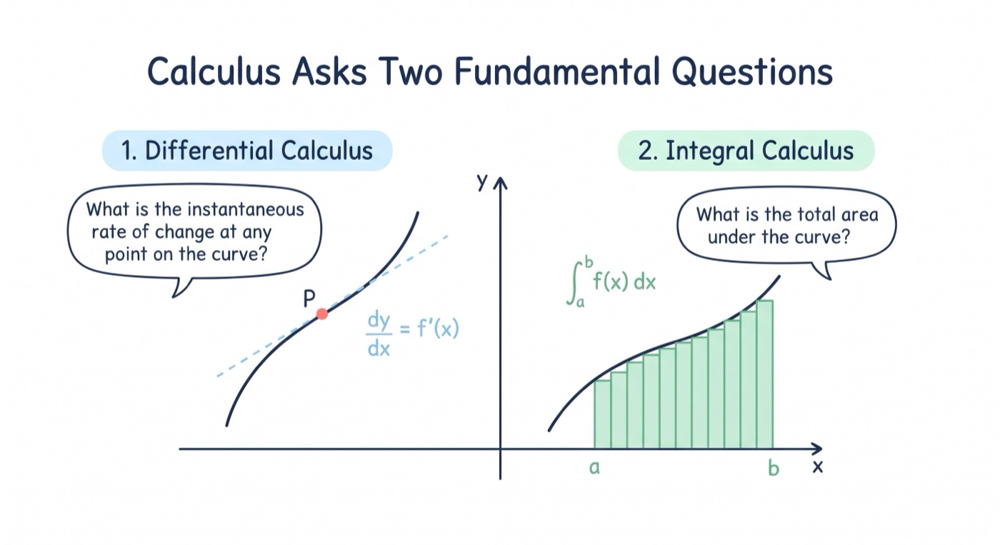
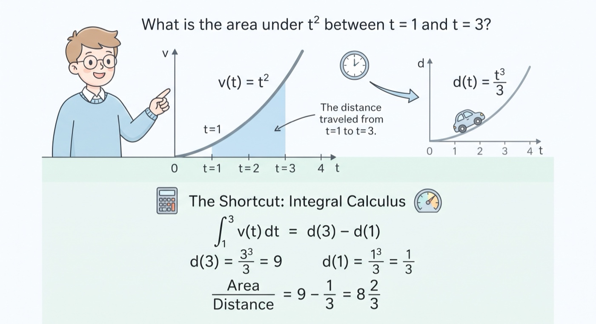
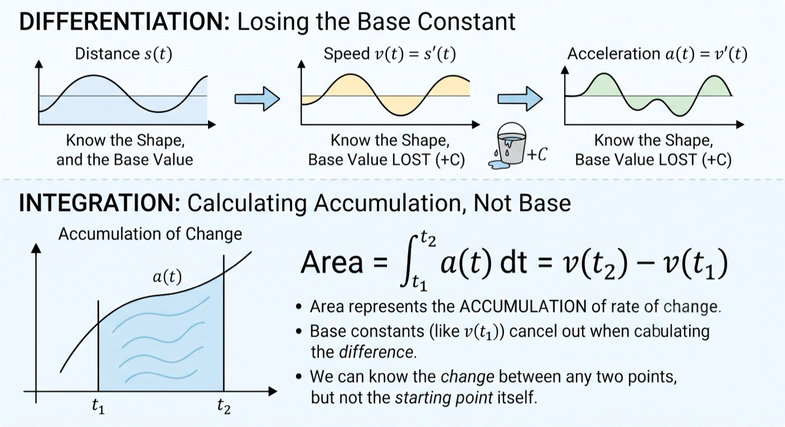

To understand calculus with illustrations | Sailin' N Voyages Series, Ep. 7
To understand calculus with illustrations
1 I think first we have to start with a straight line function, y = 2x + 3. It means: the variable x and y have a relationship - y is related to x, specifically y changes 2 times as much whenever x changes. And y starts with base value 3.
2 Assuming we have a speed-time function v = t^2, what is the instant rate of change at any point? It turned out to be 2t, meaning at any value of t, the rate of change is 2t.
3 Calculus asks two questions? What is the instance rate of change at any point on a curve? What is the total area under a curve?
4 What is the area under t^2 between t = 1 and t = 3? Assume we know the area function to be d = t^3 / 3, then the area is simply a difference d(3) - d(1). It turned out not only do we have the area function, it’s actually the distance-time function. What this means is - the area under the speed-time curve is the distance we traveled. It also means that, if we have the distance-time function, then the hard area problem for a speed-time function is suddenly a simple difference problem; and calculus, specifically integral calculus, gives us that shortcut to that area function given the speed function.
5 On the other hand, acceleration is the rate of change of speed, meaning it’s the derivative of speed. The distance, speed, and acceleration functions, knowing one will know the shapes of the others, but not its vertical shift or base value in the antiderivative direction. The reason is - derivative only concerns rate of change, going from distance to speed to acceleration, we lose any base value - a constant. When going from acceleration to speed to distance, those base info can not be recovered, but it can not change the fact that we can calculate the area between any interval because any accumulation of area is due to presence of rate of change, not its base constant.